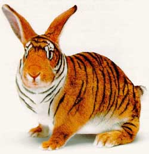

The question was: What do women really want?
Such a question would perplex even the most knowledgeable man, and to young Arthur, it seemed an impossible query. Well, since it was better than death, he accepted the monarch's proposition to have an He returned to his kingdom and began to poll everybody: the princess, the prostitutes, the priests, the wise men, the court jester. In all, he spoke with everyone but no one could give him a satisfactory answer. What most people did tell him was to consult the old witch, as only she would know the answer. The price would be high, since the witch was famous throughout the kingdom for the exorbitant prices she charged.
The last day of the year arrived and Arthur had no alternative but to talk to the witch. She agreed to answer his question, but he'd have to accept her price first: The old witch wanted to marry Gawain, the most noble of the Knights of the Round Table and Arthur's closest friend!
Young
Arthur was horrified: she was hunchbacked and awfully hideous, had only
one tooth, smelled like sewage water, often made obscene noises... He had
never run across such a repugnant creature. He refused to force his friend
to marry her and have to endure such a burden.
Gawain,
upon learning of the proposal, spoke with Arthur. He told him that nothing
was too big of a sacrifice compared to Arthur's life and the preservation
of the Round Table.
Hence,
their wedding was proclaimed, and the witch answered Arthur's question:
What a woman really wants is to be able to be
in charge of her own life.
Everyone instantly knew that the witch had uttered a great truth and that Arthur's life would be spared. And so it went. The neighboring monarch spared Arthur's life and granted him total freedom.
What
a wedding Gawain and the witch had! Arthur was torn between relief and
anguish. Gawain was proper as always, gentle and courteous. The old witch
put her worst manners on display. She ate with her hands, belched and farted,
and made everyone uncomfortable. The wedding night approached:
Gawain, steeling himself for a horrific night,
entered the bedroom.
What
a sight awaited! The most beautiful woman he'd ever seen lay before him!
Gawain was astounded and asked what had happened. The beauty replied that
since he had been so kind to her (when she'd been a witch), half the time
she would be her horrible, deformed self, and the other half, she would
be her beautiful maiden self. Which would he want her to be during the
day and which during the night?
What a cruel question? Gawain began to think of his predicament:
During
the day a beautiful woman to show off to his friend, but at night, in the
privacy of his home, an old spooky witch? Or would he prefer having by
day a hideous witch, but by night a beautiful woman to enjoy many intimate
moments? What would you do? What Gawain chose follows below, but don't
read until you've made your own choice.
>
>
>
>
>
>
>
>
>
>
>
>
>
>
>
>
>
>
>
>
>
>
>
>
>
>
>
>
>
>
Noble
Gawain replied that he would let her choose for herself. Upon hearing this,
she announced that she would be beautiful all the time, because he had
respected her and had let her be in charge of her own life.
What is he moral of this story?
THE MORAL IS
THAT IT DOESN'T MATTER IF YOUR WOMAN
IS PRETTY OR UGLY, UNDERNEATH IT ALL,
SHE'S STILL A WITCH